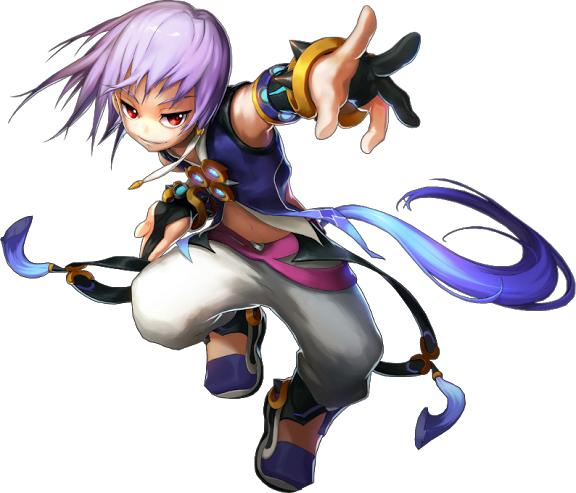
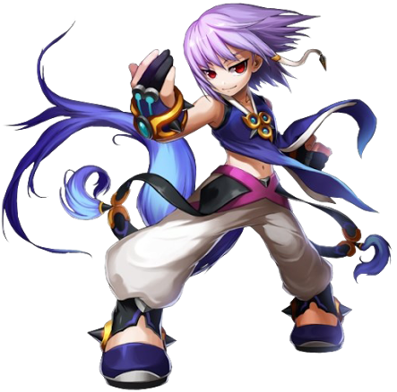
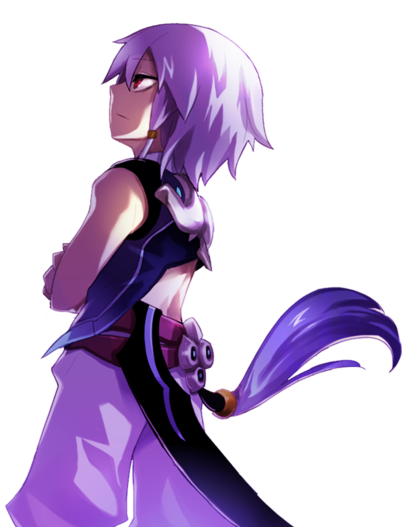
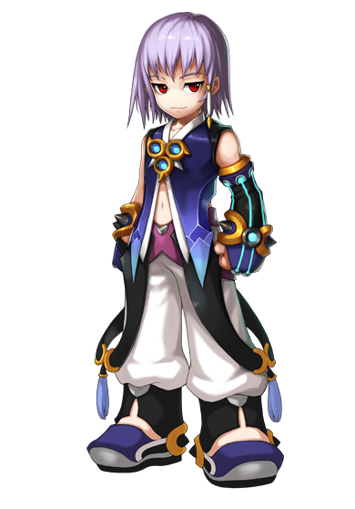
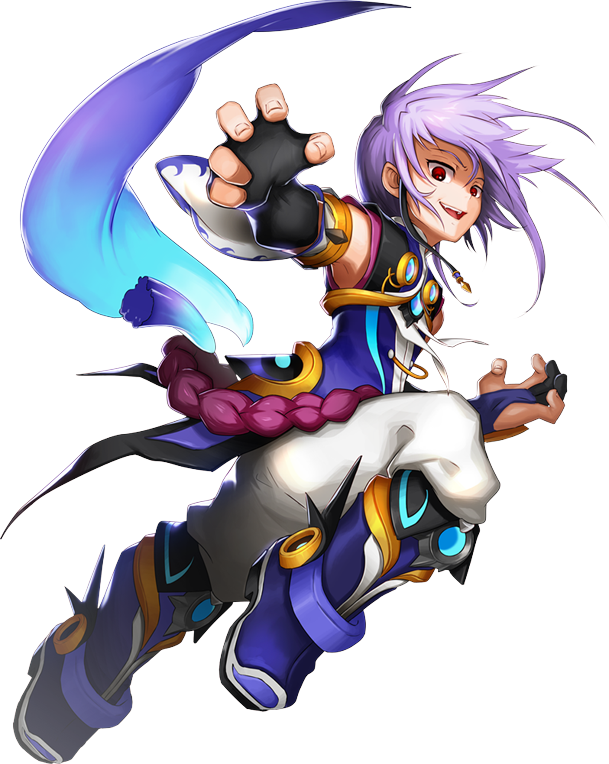

Informações Principais do Personagem
Nome: Azin Mujin
Idade: 16 anos
Origem: Terra de prata
Odeia: Alguem que seja mais forte que ele (no caso Jin)


Misterioso, reservado e extremamente racional, Azin é um dos grandes mistérios da Grand
Chase. Vingativo e com sede de poder, o garoto cujo nome verdadeiro ele mesmo preferiu abandonar
está longe de ser um herói típico. Na verdade, Azin parece simplesmente não se importar com
ninguém, mas consegue esconder isso muito bem, mostrando outra fachada mais amigável e
brincalhona para as outras pessoas.
Ainda assim, é possível que o garoto tenha um lado bom escondido em seu interior e apenas não
saiba como demonstrá-lo direito, já que não está acostumado a interagir socialmente. Afinal, ele
foi capaz de um ato heroico quando salvou o veterano Azin Tairin (e posteriormente,assumindo sua
identidade por completo pelo nome) dos Cavaleiros de Prata das portas da morte. Tairin se
transformou em seu mestre e o jovem passou a enxergá-lo como uma verdadeira figura paterna.
Tanto que assumiu sua identidade após a morte de Tairin (incluindo seu sobrenome).
Preferindo apagar da memória sua antiga vida e identidade, tudo o que o jovem Azin mais deseja
agora é provar para seu falecido mentor o quão poderoso ele se tornou. Para isso, ele parte ao
encalço de Jin e da Grand Chase, já que o jovem Cavaleiro de Prata era considerado o melhor
aluno de Tairin. Focado em pisar naqueles que o maltrataram no passado e em superar as forças de
Jin, será Azin um verdadeiro aliado da Grand Chase ou uma verdadeira bomba relógio prestes a
explodir dentro do grupo?
O quarto membro da Grand Chase de Canaban é Azin, o segundo discípulo de Azin Tairin. Ele foi
uma criança oprimida e sem amigos, mas tudo mudou quando ele salvou Tairin e o Cavaleiro de
Prata se tornou seu mestre como forma de gratidão. Quando Tairin morreu, Azin perdeu seu rumo
até que ouviu os boatos sobre Jin, e partiu em uma jornada à procura da Grand Chase e do pupilo
prodígio de seu falecido mestre.

Classes

Guerreiro
Arma: Vembrassa

Ryujin
Arma: Vembrassa
Habilidade especial
Sistema Híbrido
O Sistema Híbrido, é uma função especial que combina os Sistemas de MP e AP. Assim, ainda podem
carregar e executar habilidades normalmente como os usuários de MP, mas também podem usar as
teclas A, S, D e F para ativar as quatro habilidades. A quarta habilidade não
pode ser ativada através do modo MP e ativar qualquer habilidade através do modo AP pode
produzir um o tempo de espera até poder utilizar o atalho novamente. A 1ª Barra tem um período
de espera de 10 segundos, a 2ª de 20 segundos, a 3ª de 30 segundos e a 4ª de 45 segundos. A
combinação dos dois sistemas foi introduzida primeiro no Azin, que se expandiu depois para Holy,
e então para o resto dos personagens de MP.